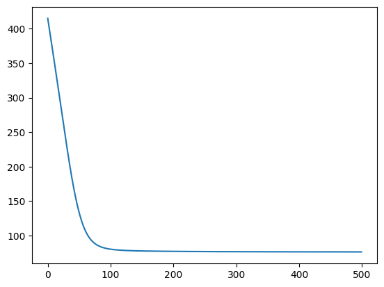
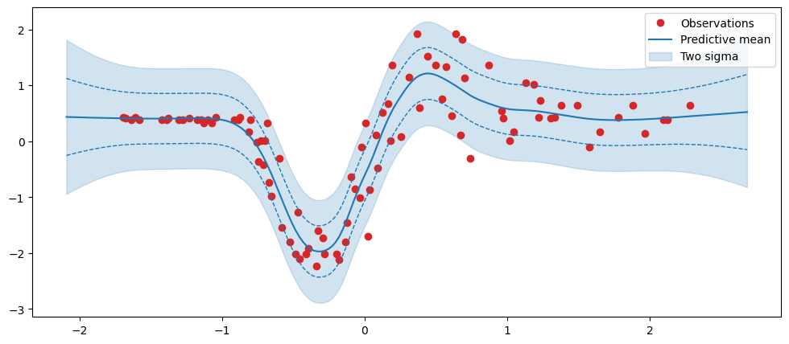

# %%capture
# %pip install -U --force-reinstall jaxutils
# %pip install -U jax jaxlib optaximport jax
import jax.random as jr
import jax.numpy as jnp
from jaxutils import Dataset
try:
from neural_tangents import stax
except ModuleNotFoundError:
%pip install neural-tangents
from neural_tangents import stax
try:
import optax as ox
except ModuleNotFoundError:
%pip install optax
import optax as ox
try:
import gpjax as gpx
except ModuleNotFoundError:
%pip install gpjax
import gpjax as gpx
try:
import regdata as rd
except ModuleNotFoundError:
%pip install regdata
import regdata as rd
import matplotlib.pyplot as pltclass NTK(gpx.kernels.AbstractKernel):
def __init__(self) -> None:
super().__init__()
def __call__(self, params, x, y):
params = jax.tree_util.tree_map(jax.nn.softplus, params)
init_fn, apply_fn, kernel_fn = stax.serial(
stax.Dense(512, W_std=params["w1"], b_std=params["b1"]), stax.Relu(),
stax.Dense(512, W_std=params["w2"], b_std=params["b2"]), stax.Relu(),
stax.Dense(512, W_std=params["w3"], b_std=params["b3"]), stax.Relu(),
stax.Dense(512, W_std=params["w4"], b_std=params["b4"]), stax.Relu(),
stax.Dense(512, W_std=params["w5"], b_std=params["b5"]), stax.Relu(),
stax.Dense(512, W_std=params["w6"], b_std=params["b6"]), stax.Relu(),
stax.Dense(512, W_std=params["w7"], b_std=params["b7"]), stax.Relu(),
stax.Dense(1, W_std=params["w8"], b_std=params["b8"])
)
return kernel_fn(x.reshape(1, 1), y.reshape(1, 1)).nngp.squeeze()
def init_params(self, key):
# return init_fn(key, input_shape=(2,1))
return {"w1": 0.1, "w2": 0.2, "w3": 0.3, "w4": 0.4, "w5": 0.5, "w6": 0.6, "w7": 0.7, "w8": 0.8,
"b1": 0.1, "b2": 0.2, "b3": 0.3, "b4": 0.4, "b5": 0.5, "b6": 0.6, "b7": 0.7, "b8": 0.8
}
# This is depreciated. Can be removed once JaxKern is updated.
def _initialise_params(self, key):
return self.init_params(key)n = 100
noise = 0.3
key = jr.PRNGKey(123)
# x = jr.uniform(key=key, minval=-3.0, maxval=3.0, shape=(n,)).sort().reshape(-1, 1)
# f = lambda x: jnp.sin(4 * x) + jnp.cos(2 * x)
# signal = f(x)
# y = signal + jr.normal(key, shape=signal.shape) * noise
x, y, xtest = rd.MotorcycleHelmet().get_data()
y = y.reshape(-1, 1)
D = Dataset(X=x, y=y)
# xtest = jnp.linspace(-3.5, 3.5, 500).reshape(-1, 1)
# ytest = f(xtest)
print(x.shape, y.shape)(94, 1) (94, 1)kernel = NTK()
prior = gpx.Prior(kernel=kernel)
likelihood = gpx.Gaussian(num_datapoints=D.n)
posterior = prior * likelihoodkey = jr.PRNGKey(1234)
parameter_state = gpx.initialise(posterior, key)
params, trainable, bijectors = parameter_state.unpack()
params["likelihood"]["obs_noise"] = jnp.array(0.1)
parameter_state = gpx.parameters.ParameterState(params, trainable, bijectors)
print(params){'kernel': {'w1': 0.1, 'w2': 0.2, 'w3': 0.3, 'w4': 0.4, 'w5': 0.5, 'w6': 0.6, 'w7': 0.7, 'w8': 0.8, 'b1': 0.1, 'b2': 0.2, 'b3': 0.3, 'b4': 0.4, 'b5': 0.5, 'b6': 0.6, 'b7': 0.7, 'b8': 0.8}, 'mean_function': {}, 'likelihood': {'obs_noise': Array(0.1, dtype=float32, weak_type=True)}}/home/patel_zeel/0Notebooks/.conda/lib/python3.9/site-packages/gpjax/parameters.py:194: UserWarning: Parameter w1 has no transform. Defaulting to identity transfom.
warnings.warn(
/home/patel_zeel/0Notebooks/.conda/lib/python3.9/site-packages/gpjax/parameters.py:194: UserWarning: Parameter w2 has no transform. Defaulting to identity transfom.
warnings.warn(
/home/patel_zeel/0Notebooks/.conda/lib/python3.9/site-packages/gpjax/parameters.py:194: UserWarning: Parameter w3 has no transform. Defaulting to identity transfom.
warnings.warn(
/home/patel_zeel/0Notebooks/.conda/lib/python3.9/site-packages/gpjax/parameters.py:194: UserWarning: Parameter w4 has no transform. Defaulting to identity transfom.
warnings.warn(
/home/patel_zeel/0Notebooks/.conda/lib/python3.9/site-packages/gpjax/parameters.py:194: UserWarning: Parameter w5 has no transform. Defaulting to identity transfom.
warnings.warn(
/home/patel_zeel/0Notebooks/.conda/lib/python3.9/site-packages/gpjax/parameters.py:194: UserWarning: Parameter w6 has no transform. Defaulting to identity transfom.
warnings.warn(
/home/patel_zeel/0Notebooks/.conda/lib/python3.9/site-packages/gpjax/parameters.py:194: UserWarning: Parameter w7 has no transform. Defaulting to identity transfom.
warnings.warn(
/home/patel_zeel/0Notebooks/.conda/lib/python3.9/site-packages/gpjax/parameters.py:194: UserWarning: Parameter w8 has no transform. Defaulting to identity transfom.
warnings.warn(
/home/patel_zeel/0Notebooks/.conda/lib/python3.9/site-packages/gpjax/parameters.py:194: UserWarning: Parameter b1 has no transform. Defaulting to identity transfom.
warnings.warn(
/home/patel_zeel/0Notebooks/.conda/lib/python3.9/site-packages/gpjax/parameters.py:194: UserWarning: Parameter b2 has no transform. Defaulting to identity transfom.
warnings.warn(
/home/patel_zeel/0Notebooks/.conda/lib/python3.9/site-packages/gpjax/parameters.py:194: UserWarning: Parameter b3 has no transform. Defaulting to identity transfom.
warnings.warn(
/home/patel_zeel/0Notebooks/.conda/lib/python3.9/site-packages/gpjax/parameters.py:194: UserWarning: Parameter b4 has no transform. Defaulting to identity transfom.
warnings.warn(
/home/patel_zeel/0Notebooks/.conda/lib/python3.9/site-packages/gpjax/parameters.py:194: UserWarning: Parameter b5 has no transform. Defaulting to identity transfom.
warnings.warn(
/home/patel_zeel/0Notebooks/.conda/lib/python3.9/site-packages/gpjax/parameters.py:194: UserWarning: Parameter b6 has no transform. Defaulting to identity transfom.
warnings.warn(
/home/patel_zeel/0Notebooks/.conda/lib/python3.9/site-packages/gpjax/parameters.py:194: UserWarning: Parameter b7 has no transform. Defaulting to identity transfom.
warnings.warn(
/home/patel_zeel/0Notebooks/.conda/lib/python3.9/site-packages/gpjax/parameters.py:194: UserWarning: Parameter b8 has no transform. Defaulting to identity transfom.
warnings.warn(negative_mll = jax.jit(posterior.marginal_log_likelihood(D, negative=True))
negative_mll(params)Array(415.1062, dtype=float32)optimiser = ox.adam(learning_rate=0.01)
inference_state = gpx.fit(
objective=negative_mll,
parameter_state=parameter_state,
optax_optim=optimiser,
num_iters=500,
)
learned_params, training_history = inference_state.unpack()100%|██████████| 500/500 [00:02<00:00, 172.53it/s, Objective=76.34]plt.plot(training_history);
learned_params{'kernel': {'b1': Array(0.03292831, dtype=float32),
'b2': Array(-0.9647168, dtype=float32),
'b3': Array(-1.2660046, dtype=float32),
'b4': Array(-1.3792713, dtype=float32),
'b5': Array(-1.4311961, dtype=float32),
'b6': Array(-1.4504426, dtype=float32),
'b7': Array(-1.4371448, dtype=float32),
'b8': Array(-1.3471106, dtype=float32),
'w1': Array(1.0706716, dtype=float32),
'w2': Array(1.1768614, dtype=float32),
'w3': Array(1.2740505, dtype=float32),
'w4': Array(1.3689499, dtype=float32),
'w5': Array(1.462641, dtype=float32),
'w6': Array(1.5562503, dtype=float32),
'w7': Array(1.6506695, dtype=float32),
'w8': Array(1.7462935, dtype=float32)},
'likelihood': {'obs_noise': Array(0.184795, dtype=float32)},
'mean_function': {}}latent_dist = posterior(learned_params, D)(xtest)
predictive_dist = likelihood(learned_params, latent_dist)
predictive_mean = predictive_dist.mean()
predictive_std = predictive_dist.stddev()fig, ax = plt.subplots(figsize=(12, 5))
ax.plot(x, y, "o", label="Observations", color="tab:red")
ax.plot(xtest, predictive_mean, label="Predictive mean", color="tab:blue")
ax.fill_between(
xtest.squeeze(),
predictive_mean - 2 * predictive_std,
predictive_mean + 2 * predictive_std,
alpha=0.2,
color="tab:blue",
label="Two sigma",
)
ax.plot(
xtest,
predictive_mean - predictive_std,
color="tab:blue",
linestyle="--",
linewidth=1,
)
ax.plot(
xtest,
predictive_mean + predictive_std,
color="tab:blue",
linestyle="--",
linewidth=1,
)
# ax.plot(
# xtest, ytest, label="Latent function", color="black", linestyle="--", linewidth=1
# )
ax.legend();